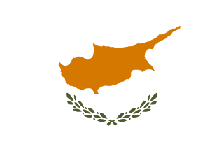

Belgio 2003 – X!NK
Belgio 2003 – X!NK"De Vriendschapsband"
 Kazakistan 2019 – Yerzhan Maxim
Kazakistan 2019 – Yerzhan Maxim"Armanynnan Qalma"
 Svezia 2006 – Molly Sandén
Svezia 2006 – Molly Sandén"Det finaste nagom kan fa"
 Polonia 2021 – Sara James
Polonia 2021 – Sara James"Somebody"
 Cipro 2007 – Yiorgos Ioannides
"I musiki dini ftera"
 Armenia 2014 – Betty
Armenia 2014 – Betty"People of the sun"
 Italia 2024 – Simone Grande
Italia 2024 – Simone Grande"Pigiama Party"